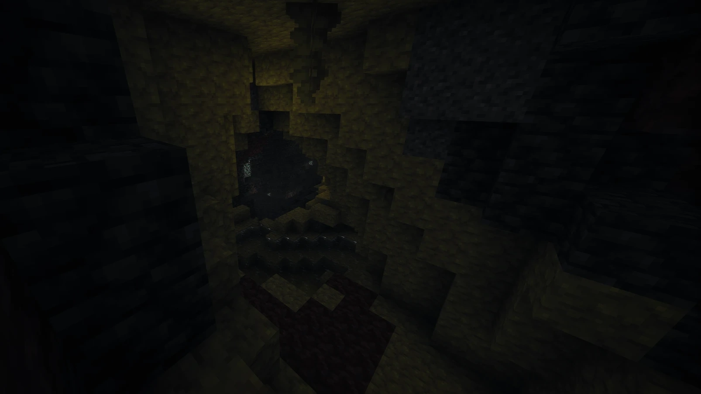
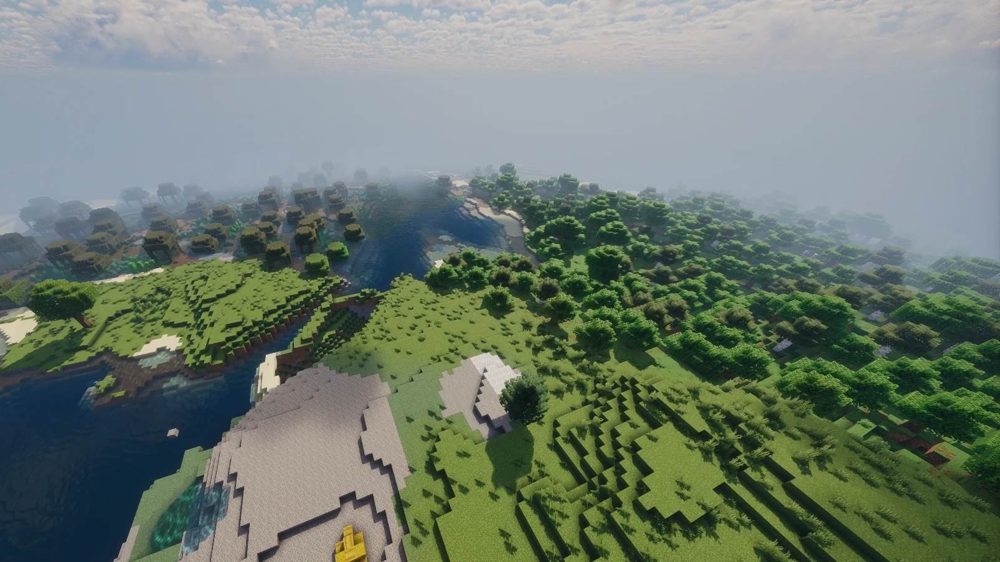
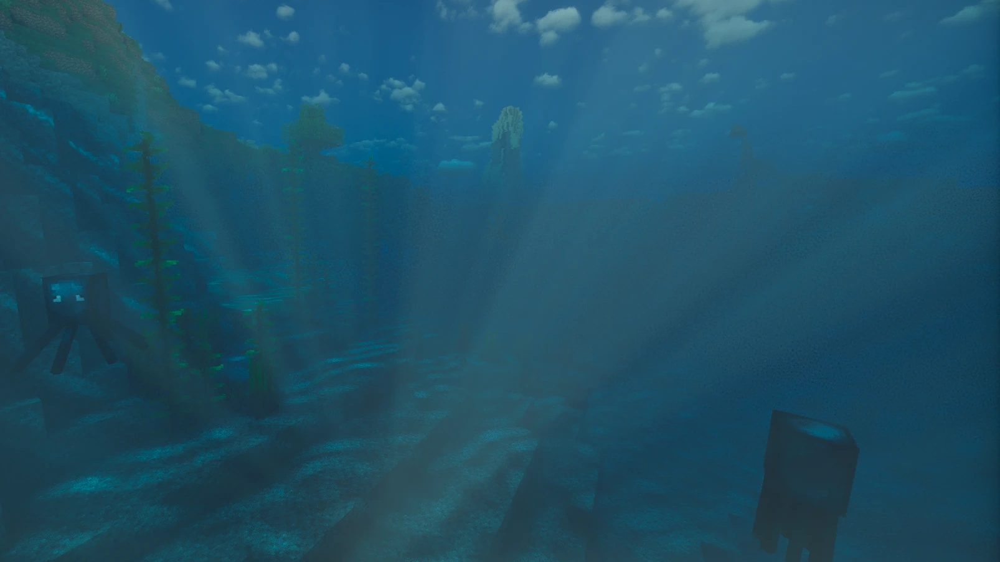
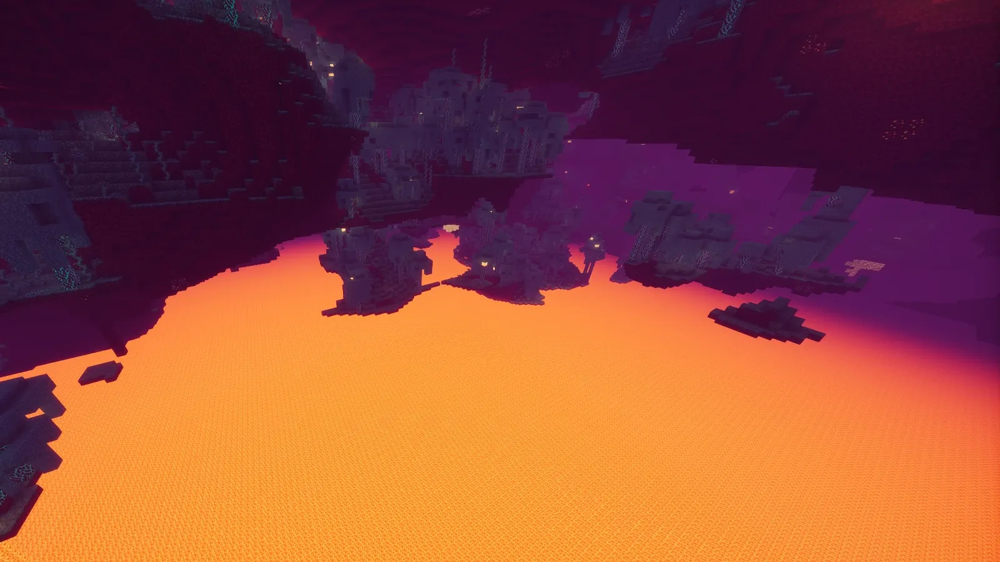
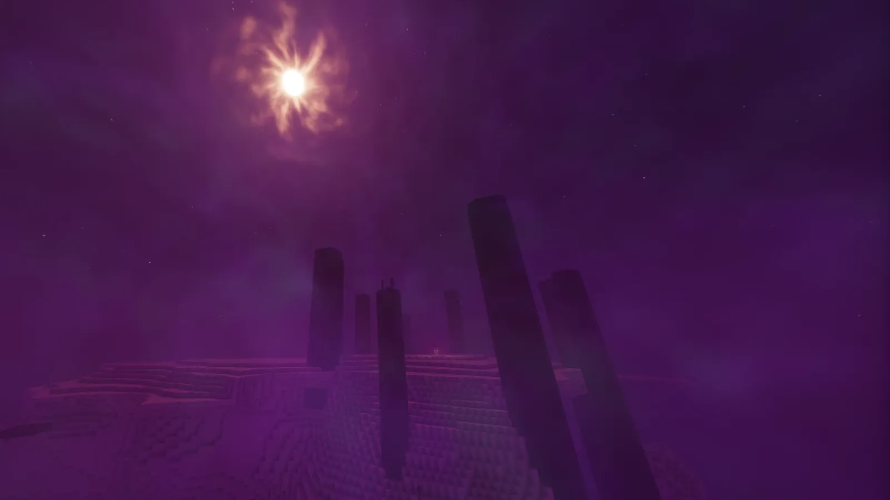
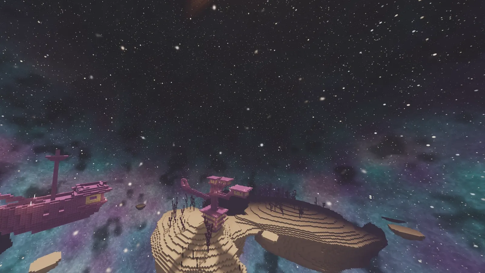
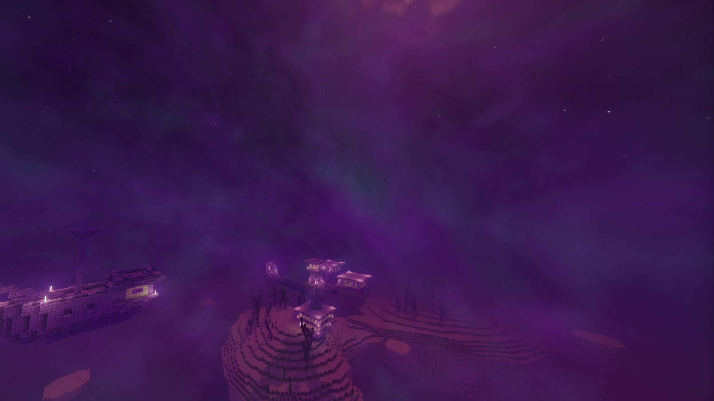

Compatibility
Crossed out: not supported yet. Cornea skips far-distance terrain to keep its frame budget for what's close to you.
Cornea aims for the warm, soft look of the big shaderpacks and spends its frame time where your eye lands first: the light near you, the sky above you, and the water in front of you.
Torches glow orange, soul fire glows blue and amethyst tints a cave purple. Light spreads through the blocks around you, and nearby blocks and mobs cast short shadows from it.
Two layers of volumetric clouds with thin cirrus above them, auroras on clear nights, and in the End, a black hole that bends the starlight around it.
Uneven waves that never line up in rows, caustics dancing on the seabed and godrays under the surface. A torch or lava pool lights the water from below.


 Crimson cliffs · Nether
Crimson cliffs · Nether
Each pair was shot from the same place, with Cornea on the left and Photon on the right. Photon is made by SixthSurge and is shown here only for comparison.
 Cornea
Cornea
Photon Cornea
Cornea
PhotonCornea
PhotonCornea Photon
Photon Cornea
Cornea
PhotonCornea
Photon
Cornea
PhotonMost of Cornea's speed comes from doing expensive work less often, at lower resolution, and only when it shows.
Clouds and godrays render at half resolution and fill in over a few frames, so they cost about a quarter of the pixels.
Coloured light flows one block per frame through a 96-block volume around you, instead of being solved from scratch every frame.
The camera sets its brightness from how much sun and sky reach you, so there's no costly average of the whole picture.
Metals, polished stone, gems and glowing ores get their gloss and surface detail from Cornea itself. No resource pack, no extra textures to read.
Every effect drops out of the shader when you switch it off, so the Low profile does less work, not just less drawing.
Cornea needs Iris, and Iris needs Sodium, so install both. It is built and tested on Minecraft 26.x, including clients that bundle them such as OneClient.
Crossed out: not supported yet. Cornea skips far-distance terrain to keep its frame budget for what's close to you.